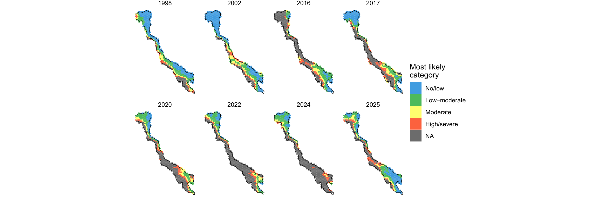
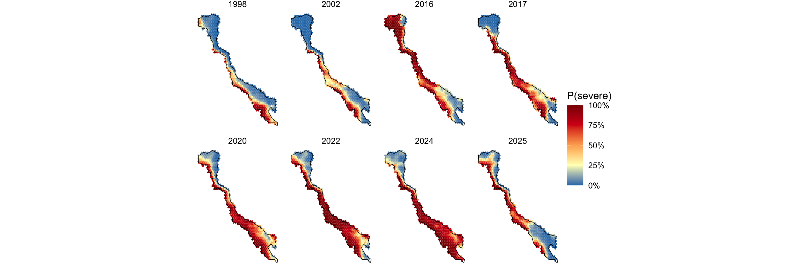
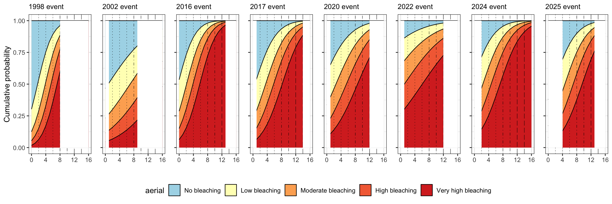
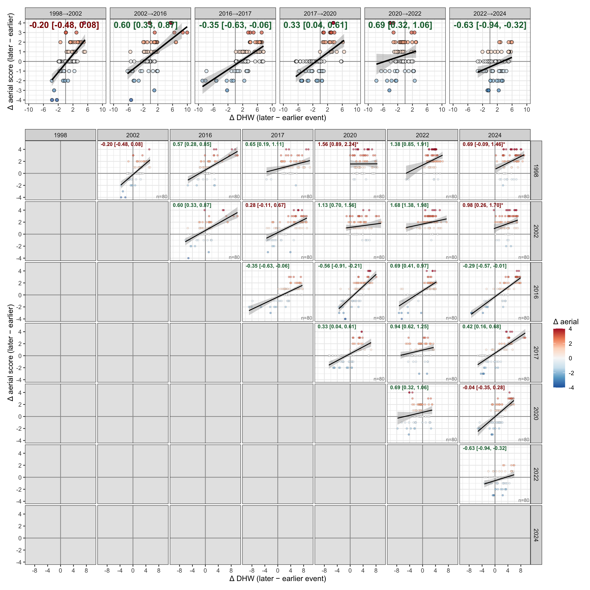

We modelled aerial bleaching severity as an ordinal response using a Bayesian spatial proportional-odds model fitted with the integrated nested Laplace approximation (INLA; Rue et al. 2009) and the stochastic partial differential equation (SPDE) approach to spatial random fields (Lindgren et al. 2011), as implemented in the R-INLA package (www.r-inla.org).
Response variable
Reef-level aerial bleaching scores were collapsed from the six-category survey scale into four ordered classes to harmonise observations across survey eras (1998–2002, 2016–2020, 2022–2025) and to ensure each class was adequately represented: class 1 (no bleaching; original score 0), class 2 (mild; scores 1–2), class 3 (moderate; score 3) and class 4 (severe; scores 4–5). The ordinal structure was modelled with a proportional-odds (cumulative logit) likelihood (family = "pom"), which estimates a common set of covariate effects and class-specific cut-points (thresholds) on the latent logit scale. We verified that the estimated cut-points were strictly ordered after back-transformation from INLA’s internal increment parameterisation (α1 = θ1; αk = α(k−1) + exp(θk)), confirming a valid cumulative ordering (α = −2.57, 0.46, 1.82).
Linear predictor
The latent linear predictor for reef i comprised a fixed-effect component, a continuous spatial random field, and a reef-level independent random effect:
where DHW is the annual maximum Degree Heating Weeks experienced by the reef in the survey year, year is a categorical fixed effect for the eight mass-bleaching events (1998, 2002, 2016, 2017, 2020, 2022, 2024, 2025; 1998 as reference), and the DHW × year interaction allows the dose–response slope to differ among events. The year main effects (β_year) estimate the contextual bleaching propensity at reference thermal stress, and the interaction terms (β_int) estimate event- specific modulation of the thermal dose–response. u(s_i) is the spatial field (below) and v_i a zero-mean Gaussian reef-level random effect (iid) capturing residual reef-specific heterogeneity.
Spatial random field (SPDE)
The spatial field u(s) was modelled as a zero-mean Gaussian random field with a Matérn covariance, approximated by the SPDE–GMRF representation on a constrained triangulated mesh. The study domain was defined by a concave hull (concaveman, concavity = 2) of the Great Barrier Reef Marine Park reef features, buffered by 10 km and simplified (10 km tolerance) to a smooth outer boundary. All spatial operations used the projected coordinate system UTM Zone 55S (EPSG:32755), so all distances and ranges are reported in metres.
The mesh was constructed with inla.mesh.2d using the domain boundary, an inner maximum edge length of 40 km and an outer (extension) edge of 800 km, with an offset of 5 km / 10 km for the inner and outer boundaries respectively. The Matérn smoothness was fixed at ν = 1 (α = 2). Observation and prediction locations were projected onto the mesh with the corresponding sparse projector matrices, and the spatial index was constructed with inla.spde.make.index. Observation and prediction data were combined in a single estimation stack (inla.stack).
We placed penalised-complexity (PC) priors on the Matérn range and marginal standard deviation (Fuglstad et al. 2019; inla.spde2.pcmatern): P(range < 150 km) = 0.5 and P(σ > 3) = 0.01. PC priors shrink the field toward the simpler base model (no spatial effect / infinite range) unless the data support additional complexity, providing conservative, interpretable control of the spatial term.
Priors on fixed effects
We used weakly informative Gaussian priors on all fixed effects (mean 0, precision 0.001) except the intercept, for which we used a mildly informative prior (mean −2, precision 1) encoding the prior expectation of low baseline severe-bleaching probability at zero thermal stress. The cut-point hyperparameters used INLA’s default priors, which yielded well-identified, strictly ordered thresholds.
Inference
Posterior inference used INLA’s default integration strategy with a variational- Bayes correction for the latent field (control.vb). We retained model configurations (config = TRUE) to enable posterior sampling of the fixed effects via inla.posterior.sample, drawing from the joint posterior to propagate the full covariance among parameters when deriving quantities that combine multiple coefficients (e.g. event-specific dose–response curves and their thresholds). Model fit was assessed with the Deviance Information Criterion and the Watanabe–Akaike Information Criterion.
Event-specific response curves
To visualise how the bleaching response to thermal stress differed among events, we computed the full posterior distribution over ordinal classes across the observed DHW gradient (0–16 °C-weeks) for each event year. For a given linear predictor η, the probability of each class k was obtained from the cumulative logit form, P(Y = k) = F(α_k − η) − F(α_{k−1} − η), with F the logistic CDF and α the ordered cut-points reconstructed from the model’s increment-parameterised thresholds (α_1 = θ_1; α_k = α_{k−1} + exp(θ_k)). Linear predictors and their 95% credible bounds were taken from the model’s posterior on the latent scale and propagated through this transformation. Curves were truncated at each event’s maximum observed DHW so that predictions were not extended beyond the sampled thermal range; the 2025 event, surveyed only above ~7.5 °C-weeks, was treated as having no low-DHW support and is shown accordingly.
Spatial prediction
Spatially continuous predictions of bleaching probability were generated on a hexagonal grid (cell size 27.8 km) covering the reef domain. For each grid cell and event year we extracted the area-weighted maximum DHW and projected the cell centroids onto the fitted mesh, then predicted the latent linear predictor at these locations by appending the prediction grid to the estimation stack and re-running INLA with the hyperparameters fixed at the fitted posterior mode (control.mode), so that prediction did not re-estimate the model. The probability of severe bleaching was mapped as P(Y = severe) = 1 − F(α_3 − η) per cell, with the posterior mean displayed as the predicted surface. Because this probability is a saturating transformation of the latent field, we report predictive uncertainty on the latent (linear-predictor) scale — the 95% credible interval width of η — which reflects spatial information (mesh precision and survey density) without the additional curvature that the logistic transformation imposes near probabilities of 0.5. Grid-cell predictions carry substantial uncertainty; we therefore interpret the predicted surfaces at the regional scale, consistent with the spatial field’s range, rather than at the level of individual cells.
Sensitivity analyses
Because the spatial range was a non-trivial fraction of the domain extent, and because the fixed-effect priors could in principle influence the year-level estimates that underpin our main inference, we conducted two pre-registered sensitivity analyses.
Spatial prior. We compared the PC-prior specification above against a diffuse Matérn prior (inla.spde2.matern with default internal priors). The estimated practical range was robust to this choice (PC-prior posterior median ≈ 357 km, 95% credible interval ≈ 219–530 km; diffuse-prior median ≈ 440 km), indicating that the regional-scale spatial structure is data-driven rather than an artefact of an unconstrained prior. The fixed-effect estimates were effectively unchanged between specifications (differences in the fourth decimal place), confirming that the inferred year-level effects are insensitive to the spatial prior.
Fixed-effect prior on the thermal covariate. We compared a mildly informative prior on the DHW coefficient (mean 1, precision 1) against a weakly informative prior (mean 0, precision 0.001). The qualitative result — a monotonic increase in the year-level intercepts across recent events, with all recent-event credible intervals excluding zero — was invariant to this choice. The absolute magnitudes were sensitive to the DHW prior (e.g. the DHW main effect shifted from 0.61 to 0.82, and recent-year intercepts by ≈ 1.1–1.4 logit units), reflecting correlation between the thermal main effect and the year intercepts. We therefore adopt the weakly informative prior as the primary specification, as it is the more standard and defensible choice and yields directly interpretable estimates, and we report both fits.
Reported spatial parameters
Under the primary model, the spatial field operated at a regional scale (posterior median practical range ≈ 357 km, 95% CrI ≈ 219–530 km) with a substantial marginal standard deviation (≈ 3.1 logit units, 95% CrI ≈ 2.2–4.3), indicating a strong but spatially broad latitudinal gradient in bleaching propensity rather than fine reef-scale autocorrelation. The reef-level independent random effect had negligible variance once the spatial field and fixed effects were included (precision posterior median ≈ 1.3 × 10^4; variance ≈ 8 × 10^−5), indicating little residual reef-specific heterogeneity beyond the regional gradient, thermal dose and event effects. We report year effects net of this validated spatial structure.
Analyses were conducted in R using R-INLA (vXX), fmesher, sf, terra and exactextractr for spatial data handling and DHW extraction, and concaveman for boundary construction.
######################################################################-# Rate of change positive SST Anomlies 1981-2024 ######################################################################-# load OISSTlibrary(sf)# Define the function to calculate the slope across the entire time seriesslope <- terra::app(GBR_OISST_SSTA, function(sst_ts) {if (sum(!is.na(sst_ts)) >1) { # Ensure there are more than one non-NA values df <-data.frame(sst = sst_ts, time =seq_along(sst_ts)) # Create a time series index lm_fit <- stats::lm(sst ~ time, data = df) # Fit linear model (sst as response, time as predictor)return(coef(lm_fit)[2]) # Return the slope (the coefficient for time) } else {return(NA) # Return NA if not enough data }})annual_rate_of_change <- slope *365.25*10# Create grid cells covering the raster extentgrid_cells <-st_bbox(c(xmin =xmin(annual_rate_of_change),ymin =ymin(annual_rate_of_change),xmax =xmax(annual_rate_of_change),ymax =ymax(annual_rate_of_change)),crs =st_crs(4326)) |>st_as_sfc() |>st_make_grid(cellsize =res(GBR_OISST_SSTA)[1], what ="polygons")#grid_cells <- st_sf(id = 1:length(grid_cells), geometry = grid_cells)# Create a polygon of non-NA cells in GBR_OISST_SSTAmask <-mask(annual_rate_of_change, annual_rate_of_change >=0.05)mask[!is.na(mask)] <-1mask_points <-as.points(mask, na.rm =TRUE)mask_sf <-st_as_sf(mask_points)projected_crs <-"+proj=utm +zone=55 +south +datum=WGS84 +units=m +no_defs"mask_projected <-st_transform(mask_sf, crs = projected_crs)resolution_meters <-25000# 0.25 mask_buffered <- mask_projected |>st_buffer(dist = resolution_meters/2, endCapStyle ="SQUARE")mask_polygons <-st_transform(mask_buffered, crs =st_crs(mask_sf))# Define the numeric breaks for the values and color scaleanom_numeric_breaks <-c(0.1, 0.15, 0.2, 0.25, 0.3) # Numeric values to map colorsanom_colour_breaks <-c("#ffffff", "#f4a6a6", "#e03f3f", "#680202") # Colors to use at these breaksrate_change_plot <-ggplot() +theme_bw() + tidyterra::geom_spatraster(data = annual_rate_of_change, interpolate =FALSE, show.legend =TRUE) +scale_fill_gradientn(limits =c(0.1, 0.3),name ="SST anom",na.value ="transparent",breaks = anom_numeric_breaks, # Set custom breaks for the color scalelabels = anom_numeric_breaks, # Use the same values for labelscolours = anom_colour_breaks, # Apply colors directlyvalues = scales::rescale(anom_numeric_breaks, from =c(0.1, 0.3)) # Rescale numeric breaks to match color scale ) +theme(axis.text.x =element_text(angle =90, vjust =1, hjust =1),plot.title =element_text(size =7, hjust =0.5),legend.position =c(0.95, 0.95), legend.justification =c(1, 1), legend.text =element_text(size =4, margin =margin(t =0, r =1, b =0, l =1.5)), # Reduce margin around textlegend.title =element_text(size =5), # Scale legend titlelegend.key.size =unit(0.5, "lines"), # Scale legend box sizelegend.background =element_rect(fill ="white", color =NA), legend.margin =margin(2.1, 2.1, 2.1, 2.1) ) +geom_sf(data = mask_polygons, fill =NA, linewidth =0.1) +geom_sf(data = ausmap, fill ="#E2E7D4", alpha =1) +labs(title ="Decadal Rate of Change \nin SST anom (°C) 1982-2024", fill ="SST") +theme(axis.text.x =element_text(angle =90, vjust =0.5, hjust=1))######################################################################-# Maximum Degree Heating Week (1981-2025)######################################################################-# Calculate the maximum DHW across all layersmax_DHW <-max(GBR_OISST_DHW, na.rm =TRUE)# Define the numeric breaks for the valuesdhw_numeric_breaks <-c(4, 8, 12, 16, 20) # Numeric values to map colors#dhw_colour_breaks <- c(, "#eddf8c", "#ff9a15", "#820000") # Colors to use at these breaksdhw_colour_breaks <-c( "#a5d3e5", "#eddf8c", "#d47a04", "#4d0101") # Colors to use at these breaks# Plotmax_DHW_plot <-ggplot() +theme_bw() +ggtitle("Max DHW 1982-2025") + tidyterra::geom_spatraster(data = max_DHW, interpolate =FALSE, show.legend =TRUE) +scale_fill_gradientn(limits =c(4, 20),name ="Max DHW",na.value ="transparent",breaks = dhw_numeric_breaks, # Set custom breaks for the color scalelabels = dhw_numeric_breaks, # Use the same values for labelscolours = dhw_colour_breaks, # Apply colors directlyvalues = scales::rescale(dhw_numeric_breaks, from =c(4, 20)) # Rescale numeric breaks to match color scale ) +theme(axis.text.x =element_text(angle =90, vjust =1, hjust =1),plot.title =element_text(size =7, hjust =0.5),axis.text.y =element_blank(),legend.position =c(0.95, 0.95),legend.justification =c(1, 1), legend.text =element_text(size =4, margin =margin(t =0, r =1, b =0, l =1.5)),legend.title =element_text(size =5),legend.key.size =unit(0.5, "lines"),legend.background =element_rect(fill ="white", color =NA), legend.margin =margin(2.1, 2.1, 2.1, 2.1) ) +geom_sf(data = ausmap, fill ="#E2E7D4", alpha =1) +labs(title ="Maximum DHW \nexposure (1982-2025)", fill ="DHW") +geom_sf(data = mask_polygons, fill =NA, linewidth =0.1) ######################################################################-# Warmest year (DHW)######################################################################-# Extract the time information (days) and convert to yearstime_info <-time(GBR_OISST_DHW)years <-as.numeric(format(time_info, "%Y"))# Aggregate daily data to annual maximum DHWmaxDHW_annual <-tapp(GBR_OISST_DHW, index = years, fun = max, na.rm =TRUE)df <-as.data.frame(maxDHW_annual, xy =TRUE)colnames(df) <-gsub("^X", "", colnames(df))df_long <- df %>%pivot_longer(cols =-c(x,y), names_to ="year", values_to ="dhw") df_long_max <- df_long %>%group_by(x, y) %>%mutate(max_dhw =max(dhw, na.rm =TRUE), # Find the max DHW for each groupdhw =ifelse(dhw == max_dhw, dhw, NA), # Set non-max dhw values to NAyear =ifelse(!is.na(dhw), year, NA)) %>%# Set non-max year values to NA dplyr::select(-max_dhw) |># Remove the temporary max_dhw columndrop_na(year) |>arrange(year)df_wide_max <- df_long_max %>%pivot_wider(names_from = year, values_from = dhw) %>%mutate(across(`1982`:`2025`, ~as.factor(ifelse(!is.na(.), cur_column(), NA))))year_max <-rast(df_wide_max, type ="xyz")# Use the `app` function to merge the layers, keeping the first non-NA valueflattened_raster <-app(year_max, fun =function(x) { first_non_na <- x[!is.na(x)]if (length(first_non_na) >0) {return(first_non_na[1]) # Return the first non-NA value } else {return(0) # If all values are NA, return NA }})values(flattened_raster) <-as.factor(values(flattened_raster))flattened_raster <-droplevels(flattened_raster) # Drop NA factor levels# Set the CRS if neededcrs(flattened_raster) <-"EPSG:4326"library(RColorBrewer)years <-as.character(1982:2025)n_colors <-length(years)#spectral_palette <- colorRampPalette(rev(brewer.pal(11, "Spectral")))(n_colors)spectral_palette <-colorRampPalette(c(rev(brewer.pal(6, "Greens")), rev(brewer.pal(8, "Blues")), (brewer.pal(8, "Reds"))))(n_colors)year_colors <-setNames(spectral_palette, years)# # max_dhw_year_plot <- ggplot() + theme_bw() + # ggtitle("") +# tidyterra::geom_spatraster(data=flattened_raster, interpolate=FALSE, show.legend=TRUE) +# scale_fill_manual(values = year_colors, na.value = "transparent", guide = guide_legend(na.translate = FALSE)) +# theme(axis.text.x = element_text(angle = 90, vjust = 1, hjust=1)) +# geom_sf(data=ausmap, fill="#E2E7D4", alpha=1) + # labs(title="Maximum DHW \nexposure (year)", fill="year") +# theme(plot.title = element_text(size=6, hjust = 0.5),# axis.text.y = element_blank(),# legend.position = c(0.95, 0.95), # legend.justification = c(1, 1), # legend.text = element_text(size = 3, margin = margin(t = 0, r = 1, b = 0, l = 1.5)), # Reduce margin around text# legend.title = element_text(size = 4), # Scale legend title to 35%# legend.key.size = unit(0.25, "lines"), # Scale legend box size to 35%# legend.background = element_rect(fill = "white", color = NA), # legend.margin = margin(1,1,1,1)) +# geom_sf(data = mask_polygons, fill = NA, linewidth = 0.1) # ######################################################################- # Frequency of Degree Heating Weeks exceeding 6DHW######################################################################-dhw_year_max <- GBR_OISST_DHW %>%tapp(index =format(time(.), "%Y"), fun = max, na.rm =TRUE)# Create hull polygonhull <-data.frame(lat =c(-9, -25, -25), lon =c(136, 136, 151.5)) |> sf::st_as_sf(coords =c("lon", "lat"), crs =4326) |>st_combine() |>st_convex_hull() |>st_cast("POLYGON") # Create outline polygon and remove intersection with hullausoutlinefill <- ausmap |>st_cast("MULTILINESTRING") |>st_cast("POLYGON") |> dplyr::select(scalerank) |>st_difference(hull) # Get parts outside the hullausoutline <- ausmap |>st_cast("MULTILINESTRING") |> dplyr::select(scalerank) |>st_crop(st_as_sfc(st_bbox(c(xmin =142.05, ymin =-24.75, xmax =154.00, ymax =-8.75), crs =4326))) |>st_cast("LINESTRING") |>mutate(length_km =st_length(geometry) /1000) |>arrange(desc(length_km))ausoutline <- ausoutline[1,]######################################################################- # Frequency of Degree Heating Weeks (1986-1995)######################################################################-#dhw_subset_first <- subset(dhw_year_max, layer_names)dhw_subset_first <-subset(dhw_year_max, paste0("X", seq(1986, 1995, 1)))dhw_exceeding_6_first_subset <-app(dhw_subset_first, fun =function(x) {sum(x >6, na.rm =TRUE)})dhw_exceeding_6_first_subset <-subst(dhw_exceeding_6_first_subset, from =0, to =NA)values(dhw_exceeding_6_first_subset) <-values(dhw_exceeding_6_first_subset) |>as.factor()# # # # dhw_exceedance_1985_1994 <- ggplot() + theme_bw() + # tidyterra::geom_spatraster(data=dhw_exceeding_6_first_subset, interpolate=FALSE, show.legend=FALSE) +# #scale_fill_distiller(palette="Spectral", na.value="transparent", breaks=seq(0,7,1), limits = c(0, 7)) +# scale_fill_manual(values = colorRampPalette(rev(brewer.pal(11, "Spectral")))(7), # na.value = "transparent",# guide = guide_legend(na.translate = FALSE)) +# theme(axis.text.x = element_text(angle = 90, vjust = 1, hjust=1)) +# labs (title="Bleaching threshold exceedance \nfrequency 1985-1995", fill="n \nevents", ylab=NULL) +# geom_sf(data=ausmap, fill="#E2E7D4", alpha=1) +# theme(plot.title = element_text(size=6, hjust = 0.5),# axis.text.y = element_blank(),# legend.position = c(0.95, 0.95), # legend.justification = c(1, 1), # legend.text = element_text(size = 3, margin = margin(t = 0, r = 1, b = 0, l = 1)), # Reduce margin around text# legend.title = element_text(size = 4), # Scale legend title to 35%# legend.key.size = unit(0.25, "lines"), # Scale legend box size to 35%# legend.background = element_rect(fill = "white", color = NA), # legend.margin = margin(0.1,0.1,0.1,0.1)) +# geom_sf(data = mask_polygons, fill = NA, linewidth = 0.1) # ######################################################################- # Frequency of Degree Heating Weeks (1996-2005)######################################################################-dhw_subset_second <-subset(dhw_year_max, paste0("X", seq(1996, 2005, 1)))dhw_exceeding_6_second_subset <-app(dhw_subset_second, fun =function(x) {sum(x >6, na.rm =TRUE)})dhw_exceeding_6_second_subset <-subst(dhw_exceeding_6_second_subset, from =0, to =NA)values(dhw_exceeding_6_second_subset) <-values(dhw_exceeding_6_second_subset) |>as.factor()# # dhw_exceedance_1995_2004 <- ggplot() + theme_bw() + # tidyterra::geom_spatraster(data=dhw_exceeding_6_second_subset, interpolate=FALSE, show.legend=FALSE) +# #scale_fill_distiller(palette="Spectral", na.value="transparent", breaks=seq(0,7,1), limits = c(0, 7)) +# scale_fill_manual(values = colorRampPalette(rev(brewer.pal(11, "Spectral")))(7), # na.value = "transparent",# guide = guide_legend(na.translate = FALSE)) +# theme(axis.text.x = element_text(angle = 90, vjust = 1, hjust=1)) +# labs (title="Bleaching threshold exceedance \nfrequency 1995-2005", fill="n \nevents", ylab=NULL) +# geom_sf(data=ausmap, fill="#E2E7D4", alpha=1) +# theme(plot.title = element_text(size=6, hjust = 0.5),# axis.text.y = element_blank(),# legend.position = c(0.95, 0.95), # legend.justification = c(1, 1), # legend.text = element_text(size = 3, margin = margin(t = 0, r = 1, b = 0, l = 1)), # Reduce margin around text# legend.title = element_text(size = 4), # Scale legend title to 35%# legend.key.size = unit(0.25, "lines"), # Scale legend box size to 35%# legend.background = element_rect(fill = "white", color = NA), # legend.margin = margin(0.1,0.1,0.1,0.1)) +# geom_sf(data = mask_polygons, fill = NA, linewidth = 0.1) ######################################################################- # Frequency of Degree Heating Weeks (2006-2015)######################################################################-dhw_subset_third <-subset(dhw_year_max, paste0("X", seq(2006, 2015, 1)))dhw_exceeding_6_third_subset <-app(dhw_subset_third, fun =function(x) {sum(x >6, na.rm =TRUE)})dhw_exceeding_6_third_subset <-subst(dhw_exceeding_6_third_subset, from =0, to =NA)values(dhw_exceeding_6_third_subset) <-values(dhw_exceeding_6_third_subset) |>as.factor()# # dhw_exceedance_2005_2014 <- ggplot() + theme_bw() + # tidyterra::geom_spatraster(data=dhw_exceeding_6_third_subset, interpolate=FALSE, show.legend=FALSE) +# #scale_fill_distiller(palette="Spectral", na.value="transparent", breaks=seq(0,7,1), limits = c(0, 7)) +# scale_fill_manual(values = colorRampPalette(rev(brewer.pal(11, "Spectral")))(7), # na.value = "transparent",# guide = guide_legend(na.translate = FALSE)) +# theme(axis.text.x = element_text(angle = 90, vjust = 1, hjust=1)) +# labs (title="Bleaching threshold exceedance \nfrequency 2005-2015", fill="n \nevents", ylab=NULL) +# geom_sf(data=ausmap, fill="#E2E7D4", alpha=1) +# theme(plot.title = element_text(size=6, hjust = 0.5),# axis.text.y = element_blank(),# legend.position = c(0.95, 0.95), # legend.justification = c(1, 1), # legend.text = element_text(size = 3, margin = margin(t = 0, r = 1, b = 0, l = 1)), # Reduce margin around text# legend.title = element_text(size = 4), # Scale legend title to 35%# legend.key.size = unit(0.25, "lines"), # Scale legend box size to 35%# legend.background = element_rect(fill = "white", color = NA), # legend.margin = margin(0.1,0.1,0.1,0.1)) +# geom_sf(data = mask_polygons, fill = NA, linewidth = 0.1) # ######################################################################- # Frequency of Degree Heating Weeks (2016-2025)######################################################################-dhw_subset_last <-subset(dhw_year_max, paste0("X", seq(2016, 2025, 1)))dhw_exceeding_6_subset_last <-app(dhw_subset_last, fun =function(x) {sum(x >6, na.rm =TRUE)})dhw_exceeding_6_subset_last <-subst(dhw_exceeding_6_subset_last, from =0, to =NA)values(dhw_exceeding_6_subset_last) <-values(dhw_exceeding_6_subset_last) |>as.factor()# # # dhw_exceedance_2015_2024 <- ggplot() + theme_bw() + # tidyterra::geom_spatraster(data=dhw_exceeding_6_subset_last, interpolate=FALSE) +# #scale_fill_distiller(palette="Spectral", na.value="transparent", breaks=seq(0,7,1), limits = c(0, 7)) +# scale_fill_manual(values = colorRampPalette(rev(brewer.pal(11, "Spectral")))(7), # na.value = "transparent",# guide = guide_legend(na.translate = FALSE)) +# geom_sf(data=ausmap, fill="#E2E7D4", alpha=1) + # labs(title="Bleaching threshold exceedance \nfrequency 2015-2025", ylab = "", fill="n \nevents") + # theme(plot.title = element_text(size=6, hjust = 0.5),# axis.text.x = element_text(angle = 90, vjust = 1, hjust=1, size=8),# axis.text.y = element_blank(),# axis.title.y = element_blank(),# legend.position = c(0.95, 0.95), # legend.justification = c(1, 1), # legend.text = element_text(size = 4, margin = margin(t = 0, r = 1, b = 0, l = 1.5)), # Reduce margin around text# legend.title = element_text(size = 5), # Scale legend title to 35%# legend.key.size = unit(0.3, "lines"), # Scale legend box size to 35%# legend.background = element_rect(fill = "white", color = NA), # legend.margin = margin(0.1,0.1,0.1,0.1)) +# geom_sf(data = mask_polygons, fill = NA, linewidth = 0.1) # hack to set extent with latraster_df <-as.data.frame(annual_rate_of_change, xy =TRUE, na.rm =TRUE)current_extent <-ext(annual_rate_of_change)longitude_range <-xmax(current_extent) -xmin(current_extent)extended_xmax <-xmax(current_extent) + longitude_range*1.5# Extend 3x the longitude rangemask_polygons_border <-as.polygons(mask, dissolve =TRUE)mask_sf <-st_as_sf(mask_polygons_border)mask_border <-st_union(mask_sf)GBR_OISST2_SST <-rast("~/GBR-dhw/datasets/GBR_OISST2_SST.tif")# # maxSST per year for OISST2 in rastgbr_OISST2_dhw_annual_max <-summarise_raster(GBR_OISST2_DHW, index ="years", fun = max, na.rm =TRUE, overwrite=TRUE)# hack to set extent with latraster_df <-as.data.frame(annual_rate_of_change, xy =TRUE, na.rm =TRUE)current_extent <-ext(annual_rate_of_change)longitude_range <-xmax(current_extent) -xmin(current_extent)extended_xmax <-xmax(current_extent) + longitude_range # Extend 3x the longitude rangemask_polygons_border <-as.polygons(mask, dissolve =TRUE)mask_sf <-st_as_sf(mask_polygons_border)mask_border <-st_union(mask_sf)################## 1. rate change SSTA ########################-rate_change_plot <-ggplot() +theme_bw() +# Y-axis with exactly 6 evenly spaced labelsscale_y_continuous(limits =c(-25, -9),breaks=seq(-25, -9, 2),labels =paste0(seq(-25, -9, 2), "°N")) +# X-axis with rotated labelsscale_x_continuous(limits =c(xmin(current_extent), extended_xmax), breaks =seq(140, 152, 2),labels =paste0(seq(140, 152, 2), "°E") ) +# Plot components tidyterra::geom_spatraster(data = annual_rate_of_change, interpolate =FALSE, show.legend =TRUE) +scale_fill_gradientn(guide =guide_colorbar(frame.colour ="black",frame.linewidth =0.2,ticks.colour ="black",ticks.linewidth =0.2 ),limits =c(0.175, 0.3),name ="SSTA",na.value ="transparent",breaks = anom_numeric_breaks,labels = anom_numeric_breaks,colours = anom_colour_breaks,values = scales::rescale(anom_numeric_breaks, from =c(0.1, 0.3)) ) +# Theme settingstheme(title =NULL,axis.text.x =element_text(size =6, angle =90, vjust =0.5, hjust =1), # Rotate x-axis labelsaxis.text.y =element_text(size =6),legend.position =c(0.28, 0.97),legend.justification =c(1, 1),legend.text =element_text(size =5, margin =margin(t =0, r =1, b =0, l =3.5)),legend.title =element_text(size =6),legend.key.size =unit(0.5, "lines"),legend.background =element_rect(fill ="transparent", color =NA), legend.margin =margin(3.1, 3.1, 3.1, 3.1),legend.key =element_rect(fill ="white", color ="black") ) +# Overlay other geometriesgeom_sf(data = mask_polygons, fill =NA, linewidth =0.1) +geom_sf(data = mask_border, fill =NA, linewidth =0.5, alpha =1) +geom_sf(data = ausmap, fill ="#E2E7D4", alpha =1) +# Label settingslabs(fill ="SST")################## 2. max DHW ########################-max_DHW_plot <-ggplot() +theme_void() +# Spatial raster layer tidyterra::geom_spatraster(data = max_DHW, interpolate =FALSE, show.legend =TRUE) +# Color scale for DHWscale_fill_gradientn(guide =guide_colorbar(frame.colour ="black",frame.linewidth =0.2,ticks.colour ="black",ticks.linewidth =0.2 ),limits =c(4, 20),name =bquote(DHW[max]),na.value ="transparent",breaks = dhw_numeric_breaks,labels = dhw_numeric_breaks,colours = dhw_colour_breaks,values = scales::rescale(dhw_numeric_breaks, from =c(4, 20)) ) +# Theme and legend stylingtheme(title =NULL,axis.text.x =NULL,legend.position =c(0.5, 0.97),legend.justification =c(1, 1),legend.text =element_text(size =5, margin =margin(t =0, r =1, b =0, l =3.5)),legend.title =element_text(size =6),legend.key.size =unit(0.5, "lines"),legend.background =element_rect(fill ="transparent", color =NA),legend.margin =margin(3.1, 3.1, 3.1, 3.1),legend.key =element_rect(fill ="white", color ="black") ) +# Spatial data layersgeom_sf(data = mask_polygons, fill =NA, linewidth =0.1) +geom_sf(data = mask_border, fill =NA, linewidth =0.5, alpha =1) +# Labelslabs(fill ="DHW")################## 3. max DHW ##################-max_dhw_year_plot <-ggplot() +theme_void() +# Spatial raster layer tidyterra::geom_spatraster(data = flattened_raster, interpolate =FALSE, show.legend =TRUE) +# Manual color scale for yearscale_fill_manual(values = year_colors,na.value ="transparent",guide =guide_legend(na.translate =FALSE) ) +# Theme and legend stylingtheme(title =NULL,axis.text.x =NULL,legend.position =c(0.78, 0.98),legend.justification =c(1, 1),legend.text =element_text(size =5, margin =margin(t =0, r =1, b =0, l =3.5)),legend.title =element_text(size =6),legend.key.size =unit(0.4, "lines"),legend.background =element_rect(fill ="white", color =NA),legend.margin =margin(3.1, 3.1, 3.1, 3.1),legend.key =element_rect(fill ="white", color ="black") ) +# Legend layout (2 columns)guides(fill =guide_legend(ncol =2)) +# Spatial data layersgeom_sf(data = mask_polygons, fill =NA, linewidth =0.1) +geom_sf(data = mask_border, fill =NA, linewidth =0.5, alpha =1) +# Labelslabs(title ="", fill ="Year")################## 1. dhw_exceedance_1985_1994 ##################-dhw_exceedance_1985_1994 <-ggplot() +theme_bw() +scale_y_continuous(limits =c(-25, -9),breaks=seq(-25, -9, 2),labels =paste0(seq(-25, -9, 2), "°N")) +scale_x_continuous(limits =c(xmin(current_extent), extended_xmax),breaks=seq(140, 152, 2),labels =paste0(seq(140, 152, 2), "°E")) + tidyterra::geom_spatraster(data = dhw_exceeding_6_first_subset, interpolate =FALSE, show.legend =FALSE) +scale_fill_manual(values =colorRampPalette(rev(brewer.pal(11, "Spectral")))(7),na.value ="transparent"#guide = guide_legend(na.translate = FALSE), ) +theme(title =NULL,axis.text.x =element_text(size =6, angle =90, vjust =0.5, hjust =1), # Rotate x-axis labelsaxis.text.y =element_text(size =6),legend.position =c(0.75, 0.98),legend.justification =c(1, 1),legend.text =element_text(size =5, margin =margin(t =0, r =1, b =0, l =3.5)),legend.title =element_text(size =7),legend.key.size =unit(0.75, "lines"),legend.background =element_rect(fill ="white", color =NA),legend.margin =margin(3.1, 3.1, 3.1, 3.1),legend.key =element_rect(fill ="white", color ="black") # Add black border around legend keys ) +geom_sf(data = mask_polygons, fill =NA, linewidth =0.1) +geom_sf(data = mask_border, fill =NA, linewidth=0.5, alpha =1) +geom_sf(data = ausmap, fill ="#E2E7D4", alpha =1) +labs(fill ="n")################## 2. dhw_exceedance_1995_2004 ##################-dhw_exceedance_1995_2004 <-ggplot() +theme_void() +scale_y_continuous(limits =c(-25, -9),breaks=seq(-25, -9, 2),labels =paste0(seq(-25, -9, 2), "°N")) + tidyterra::geom_spatraster(data = dhw_exceeding_6_second_subset, interpolate =FALSE, show.legend =FALSE) +scale_fill_manual(values =colorRampPalette(rev(brewer.pal(11, "Spectral")))(7),na.value ="transparent"#guide = guide_legend(na.translate = FALSE), ) +theme(title =NULL,axis.text.x =NULL,legend.position =c(0.56, 0.98),legend.justification =c(1, 1),legend.text =element_text(size =5, margin =margin(t =0, r =1, b =0, l =3.5)),legend.title =element_text(size =7),legend.key.size =unit(0.75, "lines"),legend.background =element_rect(fill ="white", color =NA),legend.margin =margin(3.1, 3.1, 3.1, 3.1),legend.key =element_rect(fill ="white", color ="black") # Add black border around legend keys ) +geom_sf(data = mask_polygons, fill =NA, linewidth =0.1) +geom_sf(data = mask_border, fill =NA, linewidth=0.5, alpha =1) +# geom_sf(data = ausmap, fill = "#E2E7D4", alpha = 1) +labs(fill ="n")################## 3. dhw_exceedance_2005_2014 ##################-dhw_exceedance_2005_2014 <-ggplot() +theme_void() +scale_y_continuous(limits =c(-25, -9),breaks=seq(-25, -9, 2),labels =paste0(seq(-25, -9, 2), "°N")) + tidyterra::geom_spatraster(data = dhw_exceeding_6_third_subset, interpolate =FALSE, show.legend =FALSE) +scale_fill_manual(values =colorRampPalette(rev(brewer.pal(11, "Spectral")))(7),na.value ="transparent"#guide = guide_legend(na.translate = FALSE), ) +theme(title =NULL,axis.text.x =NULL,legend.position =c(0.75, 0.98),legend.justification =c(1, 1),legend.text =element_text(size =5, margin =margin(t =0, r =1, b =0, l =3.5)),legend.title =element_text(size =6),legend.key.size =unit(0.75, "lines"),legend.background =element_rect(fill ="white", color =NA),legend.margin =margin(3.1, 3.1, 3.1, 3.1),legend.key =element_rect(fill ="white", color ="black") # Add black border around legend keys ) +geom_sf(data = mask_polygons, fill =NA, linewidth =0.1) +geom_sf(data = mask_border, fill =NA, linewidth=0.5, alpha =1) +#geom_sf(data = ausmap, fill = "#E2E7D4", alpha = 1) +labs(fill ="n")dhw_exceeding_6_subset_last_2 <- dhw_exceeding_6_subset_lastdhw_exceeding_6_subset_last_2 <-classify(dhw_exceeding_6_subset_last_2, cbind(NA, 0))dhw_exceeding_6_subset_last_2 <-as.factor(dhw_exceeding_6_subset_last_2)################## 4. dhw_exceedance_2015_2024 ##################-dhw_exceedance_2015_2024 <-ggplot() +theme_void() +scale_y_continuous(limits =c(-25, -9),breaks=seq(-25, -9, 2),labels =paste0(seq(-25, -9, 2), "°N")) + tidyterra::geom_spatraster(data = dhw_exceeding_6_subset_last_2, interpolate =FALSE, show.legend =TRUE) +scale_fill_manual(values =c("transparent", colorRampPalette(rev(brewer.pal(11, "Spectral")))(7)), # Adjust color for 0-7 (8 levels)breaks =0:7, # Order legend from 0 to 7labels =as.character(0:7), # Labels from 0 to 7na.value ="transparent", # Ensure NA is not visualizedname ="> 6DHW events \n per decade"# Legend title ) +theme(title =NULL,axis.text.x =NULL,legend.position =c(0.85, 0.98),legend.justification =c(1, 1),legend.text =element_text(size =5, margin =margin(t =0, r =1, b =0, l =3.5)),legend.title =element_text(size =6.5, hjust=0.2),legend.key.size =unit(0.4, "lines"),legend.background =element_rect(fill ="white", color =NA),legend.margin =margin(3.1, 3.1, 3.1, 3.1),legend.key =element_rect(fill ="white", color ="black") # Add black border around legend keys ) +geom_sf(data = mask_polygons, fill =NA, linewidth =0.1) +geom_sf(data = mask_border, fill =NA, linewidth=0.5, alpha =1) +#geom_sf(data = ausmap, fill = "#E2E7D4", alpha = 1) +labs(fill ="N events")library(patchwork)dhw_6dhw_maps <- dhw_exceedance_1985_1994 +inset_element(dhw_exceedance_1995_2004, left =-0.095, bottom =0, right =0.905, top =1) +inset_element(dhw_exceedance_2005_2014, left =0.1, bottom =0, right =1.1, top =1) +inset_element(dhw_exceedance_2015_2024, left =0.28, bottom =0, right =1.28, top =1)######## COMBINED-mainfig1 <- main_dhw +geom_text(data=df.labels, aes(date, dhw, label=label), size=2.5, angle =90) +inset_element(inset, left =0.02, bottom =0.3, right =0.58, top =0.98) dhw_maps <- rate_change_plot +inset_element(max_DHW_plot, left =0.01, bottom =0, right =1.01, top =1) +inset_element(max_dhw_year_plot, left =0.245, bottom =0, right =1.245, top =1.04)
Supplemenentary Figures
Figure S1 Tipping points in DHW
Annual Great Barrier Reef-wide sea surface temperature (SST), sea surface temperature anomaly (SSTA), and Degree Heating Weeks (DHW) from 1940–2025 were analysed using Bayesian changepoint detection (beast). Columns show SST, SSTA and DHW, respectively. Rows show the fitted trend component with observations and posterior mean trend in red, posterior changepoint probability Pr(tcp), posterior probability of trend order, posterior slope-sign probabilities, and residual error. Dashed vertical lines indicate the most probable changepoint years. SST and SSTA show a marked shift from weak or near-stationary trends before the late 1990s to sustained warming thereafter, while DHW shows increasingly frequent and intense thermal-stress peaks after 1998, with the strongest events concentrated in the most recent decade.
Annual maximum DHW mapped per year across the GBR domain, 1981–2026, on a common 0–21 °C-week scale. The early record is dominated by low-DHW (blue) years with isolated moderate events, transitioning to frequent high-DHW years from 2016 onward; 2016 and 2017 load heavily on the far northern GBR, 2020 spreads broadly with the strongest northern and central signal, and 2024–2025 show extensive high DHW concentrated in the north. The panel sequence makes the temporal escalation and its northward focus simultaneously legible, showing that recent events are not only hotter but spatially more extensive than any in the preceding three decades, and that the northern GBR bears the most severe and repeated accumulated thermal stress.
Figure S3 Reef-level annual maximum Degree Heating Weeks by latitude.
A heatmap of per-reef annual maximum DHW (colour, 0–21 °C-weeks) with every reef ordered by latitude on the y-axis (−9° north to −25° south) against year on the x-axis. Vertical warm bands mark the mass-bleaching years (1998, 2002, 2016–2025), which intensify and broaden through time, while the most intense DHW (dark red, >15 °C-weeks) concentrates between roughly −12° and −15° in 2016–2024. The figure shows that thermal stress is organised as coherent basin-scale episodes affecting large contiguous latitudinal bands rather than as fine reef-scale noise, directly supporting the model’s regional (~357 km) spatial field, and that the northern-central GBR has experienced both the most frequent and the most extreme recent heat exposure.
Seasonal DHW accumulation trajectories (November–August) for each mass-bleaching event, with the long-term climatological mean (black, grey ribbon) for reference and dashed horizontal lines marking each event’s peak DHW; the two panels contrast different reference framings/regions. Events differ markedly in both magnitude and timing — 2020 reaches the highest peak (~9.4 DHW) with a late-summer maximum, while 2024 and 2025 (~7 DHW) plateau earlier — and all recent events sit far above the climatological envelope. The figure demonstrates that “DHW” summarises heterogeneous thermal histories: events of similar peak DHW can differ in onset, duration and shape, which is the basis for the dose–response varying among years and a caution that peak DHW alone does not capture the full thermal exposure driving bleaching.
The constrained Delaunay triangulation used for the SPDE spatial field, with the GBRMP domain boundary and, per event year, the reef locations actually surveyed (coloured points). The mesh covers the full reef domain at consistent resolution (inner edge 40 km, outer extension to 800 km, EPSG:32755), while the survey footprints vary substantially among years — 1998/2002 span the length of the reef, 2016/2017 emphasise the north, and 2025 is restricted to a narrow central band. This figure is the visual justification for the entire repeat-survey and composition-control analysis: because which reefs were surveyed differs systematically by year, pooled year effects risk confounding temporal change with survey footprint, motivating both the spatial field and the within-reef analyses.
Maps of the 95% credible-interval width of the latent linear predictor η (logit scale) across the hexagonal prediction grid for each event. Uncertainty is lowest (pale) along the densely surveyed reef matrix and rises (dark) at the domain margins and sparsely sampled extremities, with the spatial pattern essentially constant across years. Reporting uncertainty on the latent scale rather than the probability scale avoids the artificial compression the logistic transformation imposes near p = 0.5, and the figure shows that predictions are well constrained where survey density is high and should be interpreted cautiously at the poorly sampled edges — consistent with the decision to interpret predicted surfaces at the regional rather than the grid-cell scale.
The most-likely bleaching category per grid cell per event, mapped on the collapsed ordinal scale (No/low, Low–moderate, Moderate, High/severe. The modal surface shifts from predominantly No/low in 1998/2002 to extensive High/severe and Moderate classes in 2016, 2020 and 2022, with large NA areas in years of restricted survey coverage. The figure translates the latent model into an interpretable categorical map, showing the regional progression toward more severe modal states in recent events while honestly masking cells where the prediction would be an extrapolation beyond sampled DHW.
Code
# - cat_mode = the model's single best-guess bleaching class per cell -> a# categorical analogue of the raw interpolated Fig 2a, but model-driven.GBRMPpolygon <-readRDS("~/GBR-dhw/data/GBRMPpolygon.rds")GBR_grid_pred_pom <-readRDS("~/GBR-dhw/data/GBR_grid_pred_pom.rds")# ---- discrete (categorical) map ---------------------------------------------cat_vals <-c("1"="#4DADE6","2"="#5BC36E","3"="#FFFF80","4"="#FF784E")cat_labs <-c("1"="No/low","2"="Low–moderate","3"="Moderate","4"="High/severe")p_main <-ggplot() +geom_sf(data = GBRMPpolygon, linewidth =0.25, colour ="lightgrey", fill =NA) +geom_sf(data = GBR_grid_pred_pom, aes(fill = cat_mode), colour =NA) +geom_sf(data = GBRMPpolygon, linewidth =0.25, colour ="black", fill =NA) +scale_fill_manual(values = cat_vals, labels = cat_labs, name ="Most likely\ncategory",drop =FALSE) +facet_wrap(~ year, nrow =2) +theme_void() +theme(legend.position ="right", strip.text =element_text(size =9))p_main

Figure S8 Probability of severe bleaching for INLA spatial model
Mapped posterior-mean P(Y = severe) = 1 − F(α₃ − η) per grid cell per event, on a 0–100% scale. Severe-bleaching probability is low and spatially patchy in 1998/2002, becomes high and widespread from 2016 onward, and reaches its most extensive coverage in 2020, 2022 and 2024, with the northern and central reef matrix most affected. The figure is the probability-scale expression of the headline result — the regional likelihood of severe bleaching at observed thermal stress has risen markedly across events — and complements the latent-scale uncertainty map (S6) that qualifies where these probabilities are well constrained.
Code
library(scales)sev_pal <-c("#2c7bb6","#ffffbf","#fdae61","#d7191c","darkred") # blue->redGBR_grid_pred <-readRDS("~/GBR-dhw/data/GBR_grid_pred.rds")GBRMPpolygon <-readRDS("~/GBR-dhw/data/GBRMPpolygon_grid_pred.rds")p_main <-ggplot() +geom_sf(data = GBRMPpolygon, linewidth =0.25, color ="lightgrey", fill =NA) +geom_sf(data = GBR_grid_pred, aes(fill = p_severe), show.legend=TRUE, colour =NA) +# geom_sf(data = GBRMPpolygon2025, linewidth = 0.25, color = "black", fill = NA) +geom_sf(data = GBRMPpolygon, linewidth =0.25, color ="black", fill =NA) +scale_fill_gradientn(colours = sev_pal, limits =c(0,1),name ="P(severe)", labels = percent) +facet_wrap(~ year, nrow =2) +# labs(title = "Model-predicted probability of severe bleaching",# subtitle = "Posterior mean from the spatial POM model (SPDE field + DHW + year)") +theme_void() +theme(legend.position ="right",strip.text =element_text(size =9))p_main

Figure S9 DHW predictions (NOAA CRW)
Panel A tracks the 30 reefs surveyed in all eight events (1998–2025) through their ordered bleaching category, with ribbons tracing individual-reef transitions and per-event maps of scored reefs; panel B shows the larger 2016–2025 panel (n = 81). The alluvial flows show increasing occupancy of high categories (4–5) in recent events and a rising frequency of upward transitions, while the 2022 column carries the only substantial category-5 (most severe) block. The figure presents the repeat-survey evidence on the full (non-balanced) dataset, demonstrating that the erosion of recovery and accumulation in severe categories is visible across both the long (1998-anchored, n = 30) and recent (2016-anchored, n = 81) repeat panels, and it is the data source underlying the within-reef contextual-vulnerability analyses.
Code
library(sf)library(tidyverse)library(INLA)library(concaveman)library(fmesher)library(terra)library(kableExtra)library(patchwork)library(ggplot2)library(ggridges)## load observation datadhw_inla_crw <-readRDS("~/GBR-dhw/datasets/gbr_shape_aerial_CRW.rds") |>st_transform(32755) |>mutate(aerial =case_when( max_aerial_score ==0~"0", max_aerial_score ==1~"1", max_aerial_score ==2~"2", max_aerial_score ==3~"3", max_aerial_score ==4~"4", max_aerial_score ==5~"4",TRUE~NA_character_ ) ) |>mutate(aerial =as.numeric(as.character(aerial)) +1) |># note - +1 valselect(-max_aerial_score, -median_aerial_score)# load boundary# GBRMPpolygon_complex <- st_read("~/GBR-dhw/archive/datasets/aerialshp/TS_GBRMP_FEATURES.shp", quiet=TRUE) |>gbr_reef_outline <-readRDS("~/GBR-dhw/datasets/gbr_reef_outline.rds")GBRMPpolygon_complex <- gbr_reef_outline |> dplyr::filter(FEAT_NAME=="Reef") |> concaveman::concaveman(concavity =2, length_threshold =0) |>st_zm() |>st_transform(32755) |>st_make_valid() |>st_buffer(10000)GBRMPpolygon <- GBRMPpolygon_complex |>st_simplify(dTolerance =10000, preserveTopology =FALSE)# make prediction gridGBRMPpredict_grid_CRW <-st_make_grid(st_bbox(GBRMPpolygon), cellsize =27830, square =FALSE) |>st_as_sf() |>st_filter(GBRMPpolygon, .predicate = st_intersects)# CRW_dhw <- rast("~/GBR-dhw/datasets/GBR_CoralTemp_DHW.tif")# CRW_dhw <- project(CRW_dhw, "EPSG:32755")# CRW_annual_max_dhw <- terra::tapp(CRW_dhw, index = "years", fun = max, na.rm = TRUE, overwrite=TRUE)# CRW_annual_max_dhw <- CRW_annual_max_dhw[[paste0("y_", c(1998, 2002, 2016, 2017, 2020, 2022, 2024, 2025))]]# names(CRW_annual_max_dhw) <- sub("^y_", "", names(CRW_annual_max_dhw))# writeRaster(CRW_annual_max_dhw, "~/GBR-dhw/datasets/CRW_annual_max_dhw.tif")CRW_annual_max_dhw <-rast("~/GBR-dhw/datasets/CRW_annual_max_dhw.tif")names(CRW_annual_max_dhw) <-c(1998, 2002, 2016, 2017, 2020, 2022, 2024, 2025)# update with processed CRWGBRMP_aerial_CRW <- dhw_inla_crw |>arrange(year, aerial) |>mutate(year=factor(year, levels =c(1998, 2002, 2016, 2017, 2020, 2022, 2024, 2025)))GBRMP_aerial_CRW_centroids <- GBRMP_aerial_CRW |>st_centroid()GBRMP_aerial_CRW_centroids$dhw <- GBRMP_aerial_CRW_centroids$dhwCRW# extract DHW for the prediction grid and convert to pointsGBRMPpredict_grid_dhw_CRW <-list()for (i in1:8) {#for (i in 1:length(names(CRW_annual_max_dhw))) { GBRMPpredict_grid_CRW$dhw <- exactextractr::exact_extract(CRW_annual_max_dhw[[i]], GBRMPpredict_grid_CRW, fun ="max", progress =FALSE, weights ="area") GBRMPpredict_grid_dhw_CRW[[i]] <- GBRMPpredict_grid_CRW |>mutate(year =as.factor(names(CRW_annual_max_dhw)[[i]]))}GBRMPpredict_grid_dhw_CRW <-do.call(rbind, GBRMPpredict_grid_dhw_CRW)GBR_grid_CRW <- GBRMPpredict_grid_dhw_CRW |>na.omit()GBR_grid_CRW_centroids <- GBRMPpredict_grid_dhw_CRW |>st_centroid() |>na.omit()# make points along linestring for border extentboundary_CRW <- GBR_grid_CRW_centroids |>select(-year, -dhw) |>distinct() |> concaveman::concaveman() |>st_buffer(10000) |>st_boundary()# get boundary points and make meshpts_CRW <- GBRMPpolygon |>st_coordinates() |>as.data.frame() |>select(1,2) |>as.matrix()# max.edge is the largest allowed triangle length; the lower the number the higher the resolution max.edge = c(inside the boundary triangle, outside the boundary triangle).# offset is defining how far you want to extend your domain (i.e. a secondary boundary box) for inner boundary and outer boundary; the offset goes with the max edge# see https://sites.stat.washington.edu/peter/591/Lindgren.pdfmesh_CRW <- fmesher::fm_mesh_2d_inla(loc.domain = pts_CRW[,1:2], boundary = GBRMPpolygon, max.edge =c(40000, 800000), offset =c(5000, 10000), crs="EPSG:32755")# Define the SPDE model using the mesh#spde_CRW <- inla.spde2.matern(mesh = mesh_CRW, alpha = 2)spde_CRW <-inla.spde2.pcmatern( mesh_CRW,alpha =2,prior.range =c(150000, 0.5), # P(range < 150 km) = 0.5 -- metres (EPSG:32755)prior.sigma =c(3, 0.01)) # P(sigma > 3) = 0.01 -- field SD ~3.7 was observed, so allow it# Create a projection matrix for the observed dataA_obs_CRW <-inla.spde.make.A(mesh = mesh_CRW, loc =st_coordinates(GBRMP_aerial_CRW_centroids))# Create an index for the spatial field (random effect) in the SPDE models_index_CRW <-inla.spde.make.index(name ="spatial.field", n.spde = spde_CRW$n.spde)# Prepare the data stack for the observed dataobs_stack_CRW <-inla.stack(data =list(aerial = GBRMP_aerial_CRW_centroids$aerial), # Response variableA =list(A_obs_CRW, 1), # Projection matrix for the spatial model and fixed effectseffects =list(c(s_index_CRW, list(Intercept =1)), # Spatial random effects + interceptlist(dhw = GBRMP_aerial_CRW_centroids$dhw, year = GBRMP_aerial_CRW_centroids$year, LABEL_ID = GBRMP_aerial_CRW_centroids$LABEL_ID) # Covariates: dhw and year ),tag ="obs"# Tag for the observed data stack)# repeat expand_grid for each grid-cell layoutmin_dhw_CRW <-0# Minimum DHWmax_dhw_CRW <-16dhw_seq_CRW <-seq(min_dhw_CRW, max_dhw_CRW, length.out =17) # Generate 100 values between min and max DHWunique_years_CRW <-unique(GBR_grid_CRW_centroids$year)pred_grid_CRW <-expand.grid(dhw = dhw_seq_CRW, year = unique_years_CRW) # Create a grid of dhw and year combinationsn_locs_CRW <-nrow(GBR_grid_CRW_centroids) # Number of spatial locationsexpanded_coords_CRW <-st_coordinates(GBR_grid_CRW_centroids)[rep(1:n_locs_CRW, times =nrow(pred_grid_CRW)), ] # Replicate the spatial locations for each dhw-year combination# make preds mesh / stackA_pred_expanded_CRW <-inla.spde.make.A(mesh = mesh_CRW, loc = expanded_coords_CRW)expanded_grid_CRW <- pred_grid_CRW[rep(1:nrow(pred_grid_CRW), each = n_locs_CRW), ]expanded_grid_sf_CRW <-cbind(expanded_grid_CRW, expanded_coords_CRW) |>st_as_sf(coords=c("X", "Y"), crs=32755)preds_stack_CRW <-inla.stack(data =list(aerial =NA), # NA for predictionsA =list(A_pred_expanded_CRW, 1),effects =list(c(s_index_CRW, list(Intercept =1)), # Spatial random effects + intercept for predictionlist(dhw = expanded_grid_CRW$dhw, year = expanded_grid_CRW$year, LABEL_ID =NA) # Expanded dhw and year ),tag ="preds")# polygon prediction stackGBRMP_aerial_centroids <- GBRMP_aerial_CRW |>st_centroid() |>mutate(dhw = dhwCRW)gbr_reef_subset <- gbr_reef_outline |>st_zm() |>filter(!FEAT_NAME %in%c("Mainland", "Other")) |>filter(X_COORD >140) |>filter(Y_COORD >-24.3) |>st_make_valid() |>st_transform(4326)gbr_reef_32755_CRW <- gbr_reef_subset |># <- the reef POLYGON layerst_make_valid() |>st_transform(32755)yrs_CRW <-names(CRW_annual_max_dhw) # "1998","2002",...,"2025"reef_year_dhw_CRW <-lapply(seq_along(yrs_CRW), function(i) { dhw_i <- exactextractr::exact_extract( CRW_annual_max_dhw[[i]], # year i's DHW raster layer gbr_reef_32755_CRW, # extract onto each reef polygonfun ="max", progress =FALSE) gbr_reef_32755_CRW |>transmute(TARGET_FID, LABEL_ID, year = yrs_CRW[i], dhw = dhw_i)}) |>bind_rows() |>filter(is.finite(dhw))pred_pts_CRW <- reef_year_dhw_CRW |>st_centroid()year_levels_CRW <-union(levels(GBRMP_aerial_CRW_centroids$year), sort(unique(pred_pts_CRW$year)))id_levels_CRW <-union(levels(factor(GBRMP_aerial_CRW_centroids$LABEL_ID)), sort(unique(pred_pts_CRW$LABEL_ID)))pred_pts2_CRW <- pred_pts_CRW |>mutate(year =factor(as.character(year), levels = year_levels_CRW),LABEL_ID =factor(as.character(LABEL_ID), levels = id_levels_CRW) )# build reef_year_dhw_CRW + pred_pts2_CRW with harmonised factor levels as before, then:pred_stack_poly_CRW <-inla.stack(data =list(aerial =NA),A =list(inla.spde.make.A(mesh_CRW, st_coordinates(pred_pts2_CRW)), 1),effects =list(c(s_index_CRW, list(Intercept =1)),list(dhw = pred_pts2_CRW$dhw, year = pred_pts2_CRW$year, LABEL_ID = pred_pts2_CRW$LABEL_ID)),tag ="pred_poly")combined_stack_CRW <-inla.stack(obs_stack_CRW, preds_stack_CRW, pred_stack_poly_CRW) # Define the INLA formula (full spatial model)inla_formula_CRW <- aerial ~ dhw * year +f(spatial.field, model = spde_CRW) +f(LABEL_ID, model ="iid")# Define fixed effect priorsfixedpriors_CRW <-list(dic =TRUE, waic =TRUE, config =TRUE, return.marginals.predictor =TRUE)fm1_CRW <-inla( inla_formula_CRW,data =inla.stack.data(combined_stack_CRW),control.predictor =list(A =inla.stack.A(combined_stack_CRW), compute =TRUE, link =1),family ="pom",control.family =list(control.pom =list(cdf ="logit")),control.fixed =list(mean.intercept =-2, # Baseline very low bleachingprec.intercept =1, # Moderate certainty in that beliefmean =c(dhw =1, year =0),prec =c(dhw =0.001, year =0.001) # weak dhw prior, weak year prior ),control.compute =list(dic =TRUE, waic =TRUE, config =TRUE, return.marginals.predictor =TRUE),control.inla =list(control.vb =list(emergency =30)),silent=2L)# saveRDS(fm1_CRW, "~/GBR-dhw/data/fm1_CRW.rds")# fm1_CRW <- readRDS("~/GBR-dhw/data/fm1_CRW.rds")# sp_CRW <- inla.spde2.result(fm1_CRW, "spatial.field", spde_CRW, do.transform = TRUE)# inla.qmarginal(c(.025,.5,.975), sp_CRW$marginals.range.nominal[[1]]) # range, metres# inla.qmarginal(c(.025,.5,.975), sp_CRW$marginals.variance.nominal[[1]]) # marginal variance##### extract fixed effects# Extract marginals from fm1_CRW$marginals.fixed and convert them into a data framecombined_df_fixef_CRW <-bind_rows(lapply(names(fm1_CRW$marginals.fixed), function(param) { df <-as.data.frame(fm1_CRW$marginals.fixed[[param]]) df$parameter <- paramreturn(df) })) |>rename(x=1, height=2, parameter=3)# Extract marginals from fm1_CRW$marginals.fixed and convert them into a data framecombined_df_hyper_CRW <-bind_rows(lapply(names(fm1_CRW$marginals.hyperpar), function(param) { df <-as.data.frame(fm1_CRW$marginals.hyperpar[[param]]) # Convert to data frame df$parameter <- param # Add a column for the parameter namereturn(df) })) |>rename(x=1, height=2, parameter=3) |>mutate(parameter =factor(parameter,levels=c("theta1 for POM","theta2 for POM","theta3 for POM","theta4 for POM","Theta1 for spatial.field","Theta2 for spatial.field")))# Extract marginals from fm1_CRW$marginals.fixed and convert them into a data framecombined_df_fixef_CRW <-bind_rows(lapply(names(fm1_CRW$marginals.fixed), function(param) { df <-as.data.frame(fm1_CRW$marginals.fixed[[param]]) df$parameter <- paramreturn(df) })) |>rename(x =1, height =2, parameter =3) |>filter(!parameter =="(Intercept)") |>mutate(parameter =factor(parameter, levels =c("dhw", "year2002", "year2016", "year2017", "year2020", "year2022", "year2024", "year2025","dhw:year2002", "dhw:year2016", "dhw:year2017", "dhw:year2020", "dhw:year2022","dhw:year2024","dhw:year2025" ), ordered =TRUE))fixef_plot_ms_CRW <-ggplot() +geom_ridgeline(data=combined_df_fixef_CRW, aes(x = x, y =fct_rev(parameter), height = height/10, group = parameter), fill ="aquamarine4", alpha=0.5) +theme_bw() +xlim(-3,6) +ylab("") +geom_vline(xintercept=0, linewidth=0.5, color="darkgrey") +#labs(title = "Posterior Marginals for Fixed Effects", x = "Value (x)", y = "Parameter") +theme(legend.position ="none") +xlab("Posterior Mean (Effect Size)")# ordinal (POM) prediction + stacked cumulative-probability figure# model was fit with control.pom = list(cdf = "logit"), so the back-transform # must use plogis(). cut-points are reconstructed from INLA's internal increment# parameterisation (alpha1 = theta1; alpha_k = alpha_{k-1} + exp(theta_k)),# i.e.correct ordered-threshold scale # ---- 1. POM category probabilities from latent eta + ordered cut-points -----# P(Y = k) = F(alpha_k - eta) - F(alpha_{k-1} - eta), with F = plogis (logit)predict_pom_with_bounds_CRW <-function(eta_mean, eta_lower, eta_upper, cutpoints,link ="logit") { cdf <-switch(link, logit = plogis, probit = pnorm,stop("link must be 'logit' or 'probit'")) cutpoints <-sort(cutpoints) # ensure ordered thresholds n <-length(eta_mean) K <-length(cutpoints) +1L cat_probs <-function(eta) { p <-diff(c(0, cdf(cutpoints - eta), 1)) # K categoriespmax(p, 0) } P <-t(vapply(eta_mean, cat_probs, numeric(K))) Pl <-t(vapply(eta_lower, cat_probs, numeric(K))) Pu <-t(vapply(eta_upper, cat_probs, numeric(K)))list(mean =as.data.frame(P),lower =as.data.frame(pmin(Pl, Pu)), # CI bounds can invert per categoryupper =as.data.frame(pmax(Pl, Pu)))}# ---- 2. reconstruct ORDERED cut-points (not raw thetas) ---------------------th_CRW <-c(fm1_CRW$summary.hyperpar["theta1 for POM", "mean"], fm1_CRW$summary.hyperpar["theta2 for POM", "mean"], fm1_CRW$summary.hyperpar["theta3 for POM", "mean"], fm1_CRW$summary.hyperpar["theta4 for POM", "mean"])cutpoints_CRW <-cumsum(c(th_CRW[1], exp(th_CRW[-1]))) # alpha1, alpha1+exp(th2), ...# (these should be increasing, e.g. ~ -2.57, 0.46, 1.82)# ---- 3. use the LATENT LINEAR PREDICTOR, not fitted values ------------------lp_CRW <- fm1_CRW$summary.linear.predictor # <- eta scale, what POM needseta_mean_CRW <- lp_CRW$meaneta_lower_CRW <- lp_CRW$`0.025quant`eta_upper_CRW <- lp_CRW$`0.975quant`pp_CRW <-predict_pom_with_bounds_CRW(eta_mean_CRW, eta_lower_CRW, eta_upper_CRW, cutpoints_CRW,link ="logit")# ---- 4. attach to the prediction grid ---------------------------------------index_pred_CRW <-inla.stack.index(combined_stack_CRW, tag ="preds")$datapoint_data_CRW <- expanded_grid_CRW |>mutate(loc_id =rep(seq_len(n_locs_CRW), times =nrow(pred_grid_CRW)))predicted_ordinal_mean_CRW <-cbind(point_data_CRW, pp_CRW$mean[index_pred_CRW, ]) |>pivot_longer(cols =starts_with("V"), names_to ="aerial_score", values_to ="mean") |>mutate(aerial =recode( aerial_score,V1 ="No bleaching",V2 ="Low bleaching",V3 ="Moderate bleaching",V4 ="High bleaching",V5 ="Very high bleaching" ),aerial =factor( aerial,c("No bleaching","Low bleaching","Moderate bleaching","High bleaching","Very high bleaching" ) ),year =as.integer(as.character(year)) )# ---- 5. mask each panel beyond its observed DHW (no extrapolation shown) -----max_dhw_by_year_CRW <- GBRMP_aerial_CRW_centroids |>st_drop_geometry() |>mutate(year =as.integer(as.character(year))) |>group_by(year) |>summarise(min_dhw =ceiling(min(dhw, na.rm =TRUE)), max_dhw =ceiling(max(dhw, na.rm =TRUE)), .groups ="drop")# interpcolors <- c("No bleaching"="#74ADD1","Low-Moderate bleaching"="#FEE090",# "High bleaching"="#FDAE61","Very High-Extreme bleaching"="#D73027")# <- c("No bleaching"="#ABD9E9","Low-Moderate bleaching"="#FFFFBF",# "High bleaching"="#FDAE61","Very High-Extreme bleaching"="#D73027")interpcolors_aerial_score_full_CRW <-c("#ABD9E9", "#FFFFBF", "#FEE090", "#FDAE61", "#F46D43", "#D73027")interpcolors_aerial_score_five_CRW <-c("#ABD9E9", "#FFFFBF", "#FDAE61", "#F46D43", "#D73027")plot_with_mask_CRW <-function(yr) { min_dhw <- max_dhw_by_year_CRW |>filter(year == yr) |>pull(min_dhw) max_dhw <- max_dhw_by_year_CRW |>filter(year == yr) |>pull(max_dhw) predicted_ordinal_mean_CRW_plot <- predicted_ordinal_mean_CRW |>group_by(dhw, year, aerial_score, aerial) |>summarise(mean =mean(mean, na.rm =TRUE),.groups ="drop" )ggplot() +theme_bw() +geom_area(data = predicted_ordinal_mean_CRW_plot |>filter(year == yr),aes(x = dhw, y = mean, fill = aerial),position ="stack", colour ="black", linewidth =0.4,show.legend = (yr ==2024)) +geom_vline(xintercept =c(2,4,6,8,10,12,14),linetype =c("dotted","dotted","dotted","dotdash","dotdash","longdash","longdash"),linewidth =0.2) +geom_rect(aes(xmin =0, xmax = min_dhw, ymin =0, ymax =1), fill ="white", alpha=1) +geom_rect(aes(xmin = max_dhw, xmax =16, ymin =0, ymax =1), fill ="white") +scale_x_continuous(limits =c(0,16), breaks =seq(0,16,4)) +scale_fill_manual(values = interpcolors_aerial_score_five_CRW) +xlab("") +ylab(if (yr ==1998) "Cumulative probability"else"") +ggtitle(paste0(yr, " event")) +theme(plot.title =element_text(size =10),plot.margin =unit(c(0,0,0,0), "cm"),axis.text.y =if (yr ==1998) element_text() elseelement_blank(),legend.position =if (yr ==2024) "bottom"else"none")}years_CRW <-c(1998,2002,2016,2017,2020,2022,2024, 2025) # note 2025: DHW floor ~7.5, no low-DHW supportplot_list_CRW <-lapply(years_CRW, plot_with_mask_CRW)pom_preds_CRW <-wrap_plots(plot_list_CRW, ncol =8) +plot_layout(guides ="collect") &theme(legend.position ="bottom", legend.justification ="center")pom_preds_CRW

Figure S10 DHW comparisons (OISST vs CRW)
The scatter panel (Image 3) cross-plots reef-level CRW DHW against OISST DHW per event with the 1:1 line and per-panel R²; the map panel (Image 6) shows the spatial difference (OISST − CRW) per event. Agreement between products is event-dependent — strong in 2016 (R² = 0.76) and 2022 (R² = 0.60) but weak in 2002 (R² = 0.06) and 2020 (R² = 0.26) — and OISST generally exceeds CRW (points below the 1:1 line; predominantly positive ΔDHW, strongest in the far north). The figure is a product-sensitivity check showing that absolute DHW values are sensitive to the SST product, particularly in the north and in early/low-signal years, which justifies reporting the CRW-based re-analysis (S9) and treating cross-product agreement as a bound on how precisely event thermal dose can be assigned.
Event-specific cumulative-probability (stacked-area) curves of bleaching category against DHW (0–16 °C-weeks) for the proportional-odds model, masked to each event’s observed DHW range; colours run No bleaching (blue) through Very high (dark red). The curves shift progressively leftward and upward through time — 1998/2002 retain substantial No/Low probability up to moderate DHW, whereas 2016, 2020, 2022 and 2024 reach high/very-high categories at low DHW — visualising the rising bleaching propensity per unit thermal stress that is the paper’s central result.
Alluvial diagrams track individual reefs through their bleaching category at successive events for reefs surveyed across (A) all eight events (n = 30; 1998–2025) and (B) the 2016–2025 events (n = 81). Bars show the number of reefs in each ordered category per event (0 = none, 5 = most severe); ribbons trace individual-reef transitions. In both panels occupancy of severe categories (4–5) increases through recent events, category 5 appears only from 2022, and the frequency of upward transitions rises across intervals, indicating eroding recovery between events. Per-event maps show the latitudinal distribution of scored reefs.
Figure S13 Within-reef change in bleaching severity
For reefs surveyed in all events, we regressed the change in aerial bleaching score on the change in DHW between each pair of events; the intercept (Δscore at ΔDHW = 0) estimates the change in bleaching a reef would show at identical thermal stress. Between consecutive events this matched-heat intercept was near zero or negative (e.g. 2016→2017, −0.35 [−0.63, −0.06]; 2022→2024, −0.63 [−0.94, −0.32]), consistent with recovery dominating short intervals. Across long baselines spanning the pre-/post-2016 thermal regime boundary it was consistently positive: a reef experiencing the same DHW in 2020–2022 as in 1998–2002 bleached approximately one to one-and-a-half ordered categories more severely two decades later (2002→2022, +1.68 [1.38, 1.98]; 2002→2020, +1.13 [0.70, 1.56]). Cells in which the within-reef ΔDHW distribution did not span zero are marked as extrapolated and not interpreted. Because each contrast is identified from repeated observation of the same reefs, this increase cannot be attributed to between-year differences in survey composition.
Code
year_order <-c("1998", "2002", "2016","2017","2020","2022","2024")pair_levels <-paste(head(year_order,-1), tail(year_order,-1), sep ="→")fd5 <- GBRMP_aerial_centroids |>st_drop_geometry() |>filter(year %in% year_order) |>mutate(year =factor(year, levels = year_order)) |># guard against duplicate reef-year rows that would break diff():group_by(LABEL_ID, year) |>summarise(dhw =mean(dhw), aerial =mean(aerial), .groups ="drop") |>group_by(LABEL_ID) |>filter(n_distinct(year) ==7) |># BALANCED: reefs present in all 5arrange(year, .by_group =TRUE) |>reframe( # one row per consecutive pairyear_pair = pair_levels,ddhw =diff(dhw),dscore =diff(aerial) ) |>mutate(year_pair =factor(year_pair, levels = pair_levels)) |>mutate(year =str_extract(as.character(year_pair), "^\\d{4}") |>as.integer())cell_stats5 <- fd5 |>group_by(year_pair) |>filter(n() >=5) |>group_modify(~{ m <-lm(dscore ~ ddhw, data = .x) ci <-confint(m)["(Intercept)", ]tibble(b0 =coef(m)[["(Intercept)"]],lo = ci[1], hi = ci[2],n =nrow(.x),straddles0 =min(.x$ddhw) <0&max(.x$ddhw) >0,gap_sd =abs(mean(.x$ddhw)) /sd(.x$ddhw) ) }) |>ungroup() |>mutate(extrap =!straddles0 | gap_sd >1.5,sig =!extrap & (lo >0| hi <0),label =sprintf("%.2f [%.2f, %.2f]%s", b0, lo, hi, ifelse(extrap, "*", "")) )length(unique(fd5$LABEL_ID)) # <-- balanced-panel reef count; expect < 80
library(broom)# ---- per-cell intercept at ΔDHW = 0, with support diagnostics --------------cell_stats <- fd_grid |>group_by(y0, y1) |>filter(n() >=5) |># need enough points to fitgroup_modify(~{ m <-lm(dscore ~ ddhw, data = .x) ci <-confint(m)["(Intercept)", ]tibble(b0 =coef(m)[["(Intercept)"]], # matched-heat Δscorelo = ci[1],hi = ci[2],n =nrow(.x),# does the ΔDHW cloud actually straddle 0? if not, b0 is extrapolationstraddles0 =min(.x$ddhw) <0&max(.x$ddhw) >0,# how far is 0 from the data centre, in SDs of ddhw (leverage proxy)gap_sd =abs(0-mean(.x$ddhw)) /sd(.x$ddhw) ) }) |>ungroup() |>mutate(extrap =!straddles0 | gap_sd >1.5, # flag shaky interceptslabel =sprintf("%.2f [%.2f, %.2f]%s", b0, lo, hi, ifelse(extrap, "*", "")),# colour the label by whether the CI clears zero (and isn't extrapolated)sig =!extrap & (lo >0| hi <0) )library(tidyverse)library(grid)panel_bg <-expand_grid(y0 =levels(fd_grid$y0),y1 =levels(fd_grid$y1)) |>mutate(y0_num =as.integer(as.character(y0)),y1_num =as.integer(as.character(y1)),non_year = y1_num <= y0_num ) |>filter(non_year)repeat_b <-ggplot() +geom_rect(data = panel_bg,aes(xmin =-Inf, xmax =Inf, ymin =-Inf, ymax =Inf),fill ="grey90",colour =NA,inherit.aes =FALSE ) +geom_hline(yintercept =0, colour ="grey60") +geom_vline(xintercept =0, colour ="grey60") +geom_point(data = fd_grid,aes(ddhw, dscore, fill = dscore),alpha =0.5,shape =21,size =1.3,stroke =0.1 ) +geom_smooth(data = fd_grid,aes(ddhw, dscore),method ="lm",se =TRUE,colour ="black",linewidth =0.6 ) +geom_text(data = cell_stats,aes(x =-Inf,y =Inf,label = label,colour = sig ),hjust =-0.08,vjust =1.4,size =2.7,fontface ="bold",inherit.aes =FALSE ) +scale_colour_manual(values =c(`TRUE`="#1a6e3c", `FALSE`="darkred"),guide ="none" ) +geom_text(data = cell_stats,aes(x =Inf,y =-Inf,label =paste0("n=", n) ),hjust =1.1,vjust =-0.6,size =2.5,colour ="grey45",inherit.aes =FALSE ) +facet_grid(y0 ~ y1, drop =FALSE) +scale_x_continuous(limits =c(-10, 10), breaks =seq(-8, 8, 4)) +scale_y_continuous(limits =c(-4, 5), breaks =seq(-4, 4, 2)) +scale_fill_distiller(palette ="RdBu", name ="Δ aerial") +labs(x ="Δ DHW (later − earlier event)",y ="Δ aerial score (later − earlier)" ) +theme_bw() +theme(panel.spacing =unit(2, "pt") )repeat_a / repeat_b +plot_layout(heights =c(0.2, 1))

Figure S14 Latitudinal trends in bleaching
Latitudinal distribution of aerial bleaching severity across the Great Barrier Reef, pooled across survey years. Bars represent the total number of reefs within each 1° latitude bin, with colours indicating the maximum aerial bleaching score recorded for each reef. Figure summarises the cumulative spatial pattern of bleaching observations rather than interannual variation. Reef counts are highest through the central GBR, particularly around 21–22°S and 20–21°S, where all bleaching categories are represented. Northern and southern latitude bins contain fewer reefs, and therefore smaller total counts, but still show a mixture of bleaching severities.
Figure S15 A decade of severe bleaching on the Great Barrier Reef (2016-2018)
Reef-level maximum bleaching score. Surveyed reefs across the GBR, coloured by maximum aerial bleaching score (0 = none to 5 = most severe) over a satellite basemap, shown in three latitudinal strips (north, central, south). Severe scores concentrate along the northern and central reef matrix, with a localised severe cluster in the far south, mirroring the latitudinal thermal-stress structure in Fig. S3.
Figure S16 Latitudinal trends in bleaching across events
Temporal and latitudinal structure of aerial bleaching severity across individual GBR reefs. Each row represents a reef ordered from north to south by centroid latitude, and each column represents a survey year. Tile colour indicates the maximum aerial bleaching score recorded for that reef in that year, ranging from no bleaching to extreme bleaching.
library(tidyverse); library(kableExtra); library(INLA)fmt <-function(x, d =2) formatC(x, format ="f", digits = d)fm1 <-readRDS("~/GBR-dhw/data/fm1.rds")# ---- 1. Fixed effects -------------------------------------------------------fe_labels <-c("(Intercept)"="Intercept (baseline, 1998)","dhw"="DHW (per °C-week)","year2002"="Year: 2002", "year2016"="Year: 2016", "year2017"="Year: 2017","year2020"="Year: 2020", "year2022"="Year: 2022", "year2024"="Year: 2024","year2025"="Year: 2025","dhw:year2002"="DHW × 2002","dhw:year2016"="DHW × 2016","dhw:year2017"="DHW × 2017","dhw:year2020"="DHW × 2020","dhw:year2022"="DHW × 2022","dhw:year2024"="DHW × 2024","dhw:year2025"="DHW × 2025")fixed_tab <- fm1$summary.fixed |>rownames_to_column("term") |>transmute(Parameter = fe_labels[term],Mean =fmt(mean),SD =fmt(sd),`2.5%`=fmt(`0.025quant`),`Median`=fmt(`0.5quant`),`97.5%`=fmt(`0.975quant`)) |>mutate(group =case_when(grepl("^DHW ×", Parameter) ~"DHW × year interactions",grepl("^Year", Parameter) ~"Year effects (vs 1998)",TRUE~"Main effects")) |>arrange(factor(group, levels=c("Main effects","Year effects (vs 1998)","DHW × year interactions")))# ---- 2. Hyperparameters: reconstruct interpretable scales -------------------hp <- fm1$summary.hyperpar# ordered POM cut-points from increment thetasth <- hp[grep("theta.*POM", rownames(hp)), "mean"]alpha <-cumsum(c(th[1], exp(th[-1])))# SPDE range/SD: read directly if pcmatern, else transform matern thetassp <-tryCatch(inla.spde2.result(fm1, "spatial.field", spde, do.transform =TRUE),error =function(e) NULL)if (!is.null(sp)) { rng <-inla.qmarginal(c(.025,.5,.975), sp$marginals.range.nominal[[1]]) sdv <-sqrt(inla.qmarginal(c(.025,.5,.975), sp$marginals.variance.nominal[[1]]))} else { # pcmatern reports natively rng <-as.numeric(hp[grep("Range", rownames(hp)), c("0.025quant","0.5quant","0.975quant")]) sdv <-as.numeric(hp[grep("Stdev", rownames(hp)), c("0.025quant","0.5quant","0.975quant")])}iid_prec <- hp[grep("LABEL_ID", rownames(hp)), c("0.025quant","0.5quant","0.975quant")]iid_sd <-1/sqrt(rev(as.numeric(iid_prec))) # precision -> SD (reverse quantiles)hyper_tab <-tribble(~Parameter, ~`2.5%`, ~Median, ~`97.5%`,"POM cut-point α₁ (logit)", fmt(alpha[1]), "", "","POM cut-point α₂ (logit)", fmt(alpha[2]), "", "","POM cut-point α₃ (logit)", fmt(alpha[3]), "", "","Spatial field: range (km)", fmt(rng[1]/1000,0), fmt(rng[2]/1000,0), fmt(rng[3]/1000,0),"Spatial field: marginal SD (logit)", fmt(sdv[1]), fmt(sdv[2]), fmt(sdv[3]),"Reef random effect: SD (logit)", fmt(iid_sd[1]),fmt(iid_sd[2]), fmt(iid_sd[3]))# ---- 3. Model fit -----------------------------------------------------------fit_tab <-tribble(~Statistic, ~Value,"DIC", fmt(fm1$dic$dic, 1),"WAIC", fmt(fm1$waic$waic, 1),"Effective parameters (pD)", fmt(fm1$dic$p.eff, 1),"Marginal log-likelihood", fmt(fm1$mlik[1], 1))# ---- 4. Render --------------------------------------------------------------fmt_out <-"html"# "latex" for manuscripttab_fixed <- fixed_tab |>select(-group) |>kbl(format = fmt_out, booktabs =TRUE, align ="lrrrrr",caption ="Supplementary Table S1. Posterior summaries of fixed effects from the spatial proportional-odds bleaching model (fm1). Estimates are on the logit scale; year effects are relative to the 1998 reference event.") |>kable_styling(latex_options =c("hold_position"), full_width =FALSE,bootstrap_options =c("striped","condensed")) |>pack_rows(index =table(fixed_tab$group)[unique(fixed_tab$group)])tab_hyper <- hyper_tab |>kbl(format = fmt_out, booktabs =TRUE, align ="lrrr",caption ="Supplementary Table S1 (cont.). Hyperparameters on interpretable scales: ordered POM cut-points, SPDE spatial range and marginal standard deviation, and reef-level random-effect standard deviation.") |>kable_styling(latex_options =c("hold_position"), full_width =FALSE,bootstrap_options =c("striped","condensed")) |>footnote(general ="Cut-points reconstructed from INLA increment parameterisation (α₁=θ₁; α_k=α_{k-1}+exp(θ_k)). Range in km (domain CRS EPSG:32755). Reef SD derived from the IID precision posterior.",general_title ="Note: ", footnote_as_chunk =TRUE)tab_fit <- fit_tab |>kbl(format = fmt_out, booktabs =TRUE, align ="lr",caption ="Supplementary Table S1 (cont.). Model fit statistics.") |>kable_styling(latex_options =c("hold_position"), full_width =FALSE,bootstrap_options =c("striped","condensed"))
Code
tab_fixed;
Supplementary Table S1. Posterior summaries of fixed effects from the spatial proportional-odds bleaching model (fm1). Estimates are on the logit scale; year effects are relative to the 1998 reference event.
Parameter
Mean
SD
2.5%
Median
97.5%
Main effects
Intercept (baseline, 1998)
-2.82
0.67
-4.09
-2.84
-1.43
DHW (per °C-week)
0.82
0.07
0.68
0.82
0.95
Year effects (vs 1998)
Year: 2002
0.99
0.50
0.01
0.99
1.97
Year: 2016
3.39
0.37
2.66
3.39
4.12
Year: 2017
0.44
0.46
-0.46
0.44
1.33
Year: 2020
5.14
0.42
4.32
5.14
5.97
Year: 2022
5.18
0.45
4.31
5.18
6.06
Year: 2024
5.71
0.45
4.82
5.71
6.59
Year: 2025
1.58
0.78
0.06
1.58
3.11
DHW × year interactions
DHW × 2002
-0.34
0.08
-0.51
-0.34
-0.18
DHW × 2016
-0.02
0.07
-0.16
-0.02
0.12
DHW × 2017
0.01
0.08
-0.14
0.01
0.16
DHW × 2020
-0.62
0.07
-0.76
-0.62
-0.48
DHW × 2022
-0.32
0.08
-0.48
-0.32
-0.15
DHW × 2024
-0.52
0.08
-0.67
-0.52
-0.37
DHW × 2025
-0.30
0.09
-0.48
-0.30
-0.13
Code
tab_hyper
Supplementary Table S1 (cont.). Hyperparameters on interpretable scales: ordered POM cut-points, SPDE spatial range and marginal standard deviation, and reef-level random-effect standard deviation.
Parameter
2.5%
Median
97.5%
POM cut-point α₁ (logit)
-2.53
POM cut-point α₂ (logit)
0.56
POM cut-point α₃ (logit)
1.94
Spatial field: range (km)
228
348
537
Spatial field: marginal SD (logit)
2.26
3.14
4.39
Reef random effect: SD (logit)
0.00
0.01
0.04
Note: Cut-points reconstructed from INLA increment parameterisation (α₁=θ₁; α_k=α_{k-1}+exp(θ_k)). Range in km (domain CRS EPSG:32755). Reef SD derived from the IID precision posterior.
Code
tab_fit
Supplementary Table S1 (cont.). Model fit statistics.